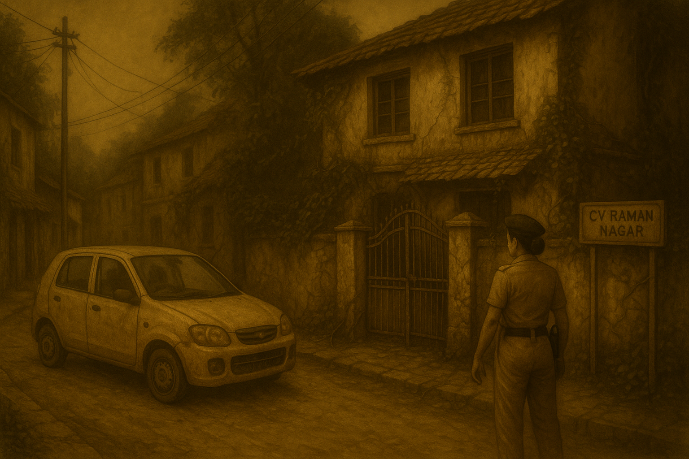
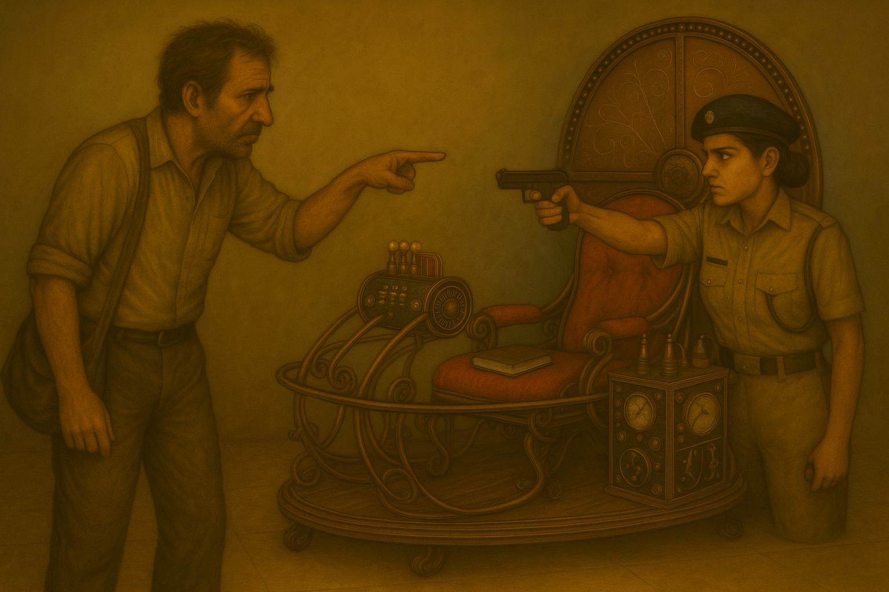

The police station exploded into chaos the moment Madan broke free. With a sudden surge of strength that belied his age, he shoved the constables aside and bolted towards the exit. Shouts filled the air—orders barked, boots pounding against concrete—but Madan was already out the door.
In the street, headlights slashed through the dark. He wrenched open the door of a battered white Alto idling near the kerb, threw the startled driver aside, and slammed the accelerator. Tyres shrieked, rubber burning into the midnight silence, the car fishtailing as it tore down the road.
Avni was out a second later, fury in her stride.
"MOVE!" she barked, jumping into the police jeep. Two constables scrambled in, and the chase began. Sirens wailed, red-blue lights slicing through Bangalore's deserted streets. Sleepy shopkeepers pulled shutters tighter; stray dogs scattered as the convoy thundered past.
Madan drove like a man possessed, not caring for signals, cutting alleys, the Alto rattling dangerously as if ready to fall apart. His face was set, jaw clenched, every turn pushing him closer to something only he knew.
Finally, he swung into a narrow lane—old CV Raman Nagar. The neighbourhood looked forgotten, swallowed by time. Houses leaned with age, moss streaked the stone walls, and creepers wound across broken windows. The Alto screeched to a halt before a weather-beaten villa, its gate half-hanging on rusted hinges.

Avni pulled up seconds later. She stepped out, surveying the place with a cop's eyes—neglect everywhere, but something lived here still. A single bulb glowed weakly over the doorway, insects swirling around it like moths to fire.
She signalled to her men.
"Constable—guard the gate. No one in, no one out."
"Yes, madam!"
Hand on her Glock, Avni pushed inside.
The air within was heavy, stagnant with the smell of rust and old paper. Dust-sheeted furniture lined the hall, ghostlike in the dimness. In the centre, surrounded by scattered notebooks and rusting tools, stood a contraption—steel ribs, copper coils, and dials that looked like they belonged to another century. The infamous time machine.
Madan was already inside, tearing through a locked cupboard, papers flying like startled birds. His hands shook as he flung notebooks to the ground.
"It's not here! Where is it?" he muttered frantically, sweat running down his temple. Then louder, toward Avni—"My diary. I kept it here. Someone's taken it!"
"Don't move!" Avni's voice cut through, sharp as steel. She had her Glock trained on him, both hands steady, her stance unshaken.
"Inspector, please," Madan gasped, chest heaving. "You don't understand—I need the diary. The line that girl spoke, the exact words—the killer said it because it's written in there. Only in there!"
Avni narrowed her eyes, her aim unflinching.
"It's over, Madan. You ran. You resisted. You cannot talk your way out of this."
Madan froze, chest rising and falling like a trapped animal. Then his eyes darted across the room—toward the machine. The coils gleamed faintly under a beam of moonlight through the broken tiles. On the seat of the machine, half-buried under loose papers, lay a leather-bound diary.

"There," he whispered. His voice cracked with equal parts relief and dread. "There it is. Let me pick it up. I promise, I won't run."
Avni's finger rested firm against the trigger guard.
"One move too fast, and you won't get the chance to read a single word."
Step by cautious step, Madan moved toward the machine, Avni's Glock following his every motion. He reached the chair, picked up the diary,and clutched it like it was a piece of his soul.
As he fumbled it open, something slipped from between its pages. A folded letter, edges browned, tucked deliberately inside.
Madan froze. His breath hitched. With trembling fingers, he unfolded it and began to read.
The room fell silent—Avni, gun still fixed, waiting, the machine's brass coils looming like sentinels. Outside, the distant wail of a siren faded, leaving only the sound of Madan's voice as his lips moved over the words written to him…